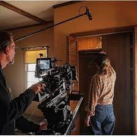
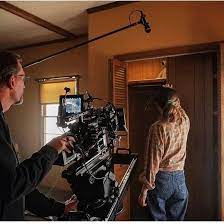

Jenna Abdel
Hi, my name is Jenna and I am studying Film and Video Production.
I am a passionate young woman who is dedicated to pursuing her dreams of becoming an actress. Her journey began in San Jose, where she developed a love for performing at a young age. As a child, she would eagerly participate in school plays, talent shows, and local theater productions, always mesmerizing audiences with her natural talent and charisma.
Recognizing her daughter's passion, my parents enrolled her in acting classes and supported her artistic endeavors. They saw her potential and encouraged her to pursue a career in the entertainment industry. With their unwavering support, I made the decision to pursue formal training and moved to Riverside to attend a prestigious acting school.
At acting school, I immersed herself in a rigorous curriculum that covered various acting techniques, stagecraft, voice modulation, and character analysis. She learned from experienced industry professionals who pushed her boundaries and helped her develop a versatile range of skills. I embraced every opportunity to perform, both in class and during extracurricular theater productions.
During her studies, I developed a deep appreciation for the craft of acting. She discovered that acting was not just about reciting lines, but rather about embodying a character and connecting with the audience on an emotional level. She began exploring different genres and styles, challenging herself to portray diverse roles that showcased her versatility.
Outside of school, I actively sought opportunities to gain real-world experience. She auditioned for local theater companies, independent films, and student projects. With each audition, she honed her skills, learned from setbacks, and grew more resilient. Her determination and perseverance caught the attention of casting directors and fellow actors, earning her a reputation as a talented and dedicated performer.
As I progressed through her training, she started to envision a future in the entertainment industry. She dreams of gracing the silver screen, captivating audiences with her powerful performances, and working alongside renowned directors and actors. She knows that success in acting requires hard work, dedication, and a bit of luck, but she is determined to give her all and seize every opportunity that comes her way.
Beyond her acting aspirations, I also recognizes the importance of continued learning and personal growth. She remains open to new experiences and seeks out collaborations with other artists to expand her horizons. She believes that storytelling has the power to change lives, and she is eager to contribute to the industry by portraying complex and inspiring characters that resonate with audiences.
Today, I continues to study diligently and pursue acting opportunities while balancing her academic commitments. Her passion, talent, and unwavering dedication set her on a path towards a successful career in acting. With each step she takes, she moves closer to realizing her dreams and leaving a lasting impact on the world of performing arts.
I am a passionate young woman who is dedicated to pursuing her dreams of becoming an actress. Her journey began in San Jose, where she developed a love for performing at a young age. As a child, she would eagerly participate in school plays, talent shows, and local theater productions, always mesmerizing audiences with her natural talent and charisma.
Recognizing her daughter's passion, my parents enrolled her in acting classes and supported her artistic endeavors. They saw her potential and encouraged her to pursue a career in the entertainment industry. With their unwavering support, I made the decision to pursue formal training and moved to Riverside to attend a prestigious acting school.
At acting school, I immersed herself in a rigorous curriculum that covered various acting techniques, stagecraft, voice modulation, and character analysis. She learned from experienced industry professionals who pushed her boundaries and helped her develop a versatile range of skills. I embraced every opportunity to perform, both in class and during extracurricular theater productions.
During her studies, I developed a deep appreciation for the craft of acting. She discovered that acting was not just about reciting lines, but rather about embodying a character and connecting with the audience on an emotional level. She began exploring different genres and styles, challenging herself to portray diverse roles that showcased her versatility.
Outside of school, I actively sought opportunities to gain real-world experience. She auditioned for local theater companies, independent films, and student projects. With each audition, she honed her skills, learned from setbacks, and grew more resilient. Her determination and perseverance caught the attention of casting directors and fellow actors, earning her a reputation as a talented and dedicated performer.
As I progressed through her training, she started to envision a future in the entertainment industry. She dreams of gracing the silver screen, captivating audiences with her powerful performances, and working alongside renowned directors and actors. She knows that success in acting requires hard work, dedication, and a bit of luck, but she is determined to give her all and seize every opportunity that comes her way.
Beyond her acting aspirations, I also recognizes the importance of continued learning and personal growth. She remains open to new experiences and seeks out collaborations with other artists to expand her horizons. She believes that storytelling has the power to change lives, and she is eager to contribute to the industry by portraying complex and inspiring characters that resonate with audiences.
Today, I continues to study diligently and pursue acting opportunities while balancing her academic commitments. Her passion, talent, and unwavering dedication set her on a path towards a successful career in acting. With each step she takes, she moves closer to realizing her dreams and leaving a lasting impact on the world of performing arts.
Experience
Developer
• Developed websites for company X
• Speaker at hack-a-thons
• Experience with HTML, CSS, Javascript, Photoshop
Teaching Assistant
• Ran sessions to help students learn how to code
• Reviewed and graded student coding projects
• Created educational content to help promote student education
• TA'd for over 400 students each academic quarter
Education
UC Riverside
University of California Riverside
University of California Riverside
Portfolio


